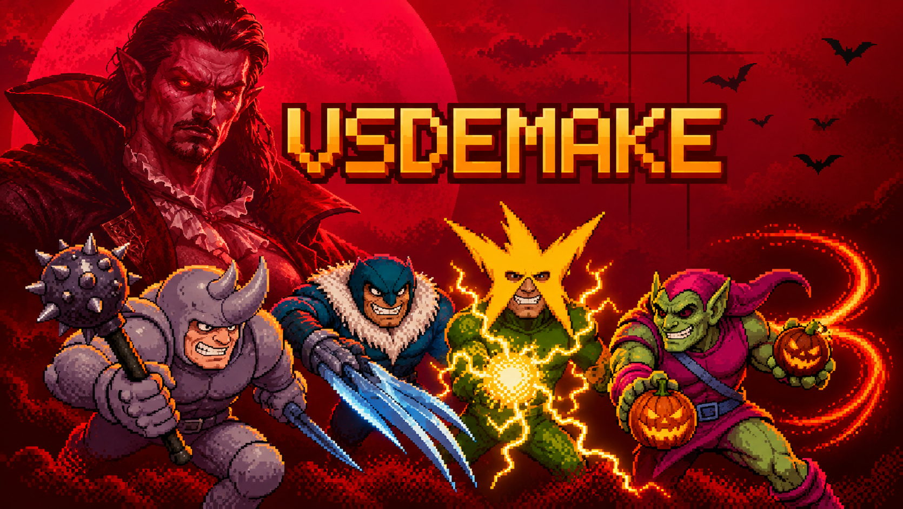

What's in it
The full content of version 0.2.10, rebuilt for the console.
Two stages
Mad Forest and Inlaid Library, with their music, day/night, stage events and bosses. Reach level 20 in the Forest to unlock the Library.
13 characters
The starting crew plus the hidden ones, unlocked and bought at the character select as in the original.
Weapons & 9 evolutions
Whip to Clock Lancet — every weapon except Pentagram (left out on purpose) — plus Bloody Tear, Holy Wand, Vandalier and the rest.
Power Up shop
14 permanent bonuses with the original's prices and the refund button.
40 achievements
Collection and Achievements screens, unlocks and gold prizes, saved with an automatic backup.
Treasure chests
The opening scene: coins, ribbons, item reels, fireworks for the big chest. Skip it with B.
Sound & music
The original's effects and stage tracks, decoded on the console with the original's volume, pitch and repeat rules.
Pause & options
Volumes, Flashing VFX, Damage Numbers, your build and stats — like the original's pause screen.
Title screen
The demake's own background art, built into default.xex.

engine/assets/title_bg.png. Not from the original game; characters depicted belong to their respective rights holders.How to play
There's nothing to download but source: the data comes from your Steam copy, the executable from your own XDK.
Get the supported Steam build
With the Steam account that owns Vampire Survivors, open
steam://open/consoleand enter:download_depot 1794680 1794681 8292959317163221061
Wait for “Depot download complete” and keep the reported path (about 200 MB).
Get the patcher
Needs Node.js 20 or newer.
git clone https://github.com/SpikeTheDragon40k/vsdemake.git cd vsdemake/patcher npm install
Verify and build your data pack
node bin/vspatch.js verify "<path to supported game files>" node bin/vspatch.js build "<path to supported game files>" --out vsdata.vspack
You get
vsdata.vspack(about 32 MB, 88 entries). Keep it local — never share it.Play on Xbox 360
Build
default.xexwith Visual Studio 2010 and the Xbox 360 XDK, copy it andvsdata.vspackinto one folder on the HDD or a USB stick, and launch it from Aurora, XeXMenu or FreeStyle Dash. Full walkthrough: Xbox 360 guide · first-boot checks.
Controls
| Action | Controller |
|---|---|
| Move | D-pad / left stick |
| Confirm | A |
| Start / pause | Start |
| Back / resume | B |
How it works
The engine and the game's content are kept apart.
The patcher reads the game files without running the original game. It converts textures, atlases, maps, fonts, strings and gameplay tables, and copies the 30 OGG sounds unchanged into one binary pack. The engine decodes the sounds itself at run time. Patching uploads nothing and downloads nothing.
Why Xbox 360 only?
On PC, the right way to play Vampire Survivors is to buy the original — it's far bigger and better than this early version. vsdemake is a homebrew technical exercise that brings an early build to a console the original never shipped on. The engine still compiles on PC, but only as a headless test tool with no window, controls or sound.
FAQ
Do I need to own Vampire Survivors?
Yes. The project ships no game code, assets or data packs. You must own the game on Steam and build the pack from your own files.
Why version 0.2.10?
The demake targets the early Electron/Phaser build, whose formats the patcher supports. Only Steam manifest 8292959317163221061 is supported; the patcher checks hashes against it.
How do I update?
Rebuild and replace default.xex. Rebuild vsdata.vspack only when the changelog says so or the game tells you at start-up. Keep vsdemake.sav — it stays valid across updates.
Where are my saves?
In vsdemake.sav next to default.xex, with an automatic .bak backup. Don't edit it by hand: that breaks its checksum.
The title says “NO SOUNDS IN THE PACK”.
Rebuild vsdata.vspack with the current patcher (88 entries, 30 sounds).
What isn't done yet?
Hyper mode and Green Acres can be unlocked but not played yet, and long-session performance on the console is still being checked.
Can I share my data pack?
No. Don't distribute vsdata.vspack, extracted data, converted assets or de-obfuscated source.
Credits & legal
vsdemake is an unofficial fan project. It is not affiliated with, authorized by, or endorsed by poncle or Microsoft. Vampire Survivors and its content belong to their respective rights holders. Support poncle by buying and playing the original game.
The project's own code is MIT-licensed. Third-party: stb_vorbis and stb_image by Sean Barrett (public domain / MIT); the UI font is a bitmap version of Liberation Mono under the SIL Open Font License 1.1; the libxenon fallback embeds shader data from the libxenon examples (BSD).